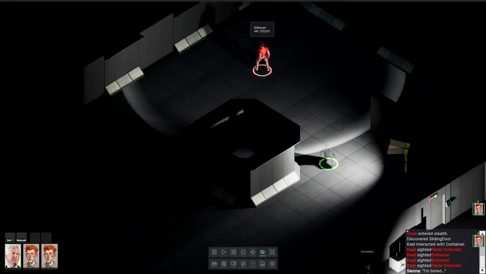

CYNTHION
An isometric party-based CRPG set on Earth's Moon, ~300 years after colonization.
Then Mars arrived, and the future went with it. The colony keeps running on its old habits. The people who stayed are only beginning to realise they've been quietly written off.
Lead a party through what's left. Talk to the people staying, the people leaving, the people who never had a choice. Help decide what Cynthion becomes.




- ~2080s
- The First Breath. Terraforming proven on the Moon.
- ~2160s
- The Great Seal. A fungal crisis severs dome connections.
- ~2200
- The Mars Pivot. Investment leaves the Moon for Mars.
- ~2250s
- The Blackout. Eleven days of silence from Earth.
- ~2290s
- The Last Ship. No more passenger service.
- ~2300
- Today.
Join the mailing list for updates.